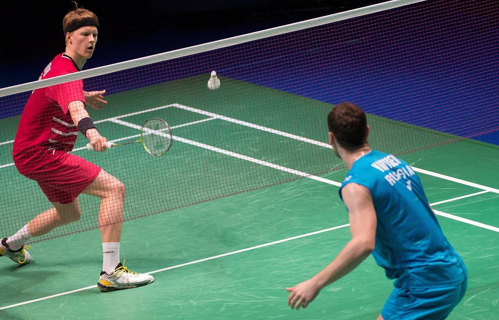
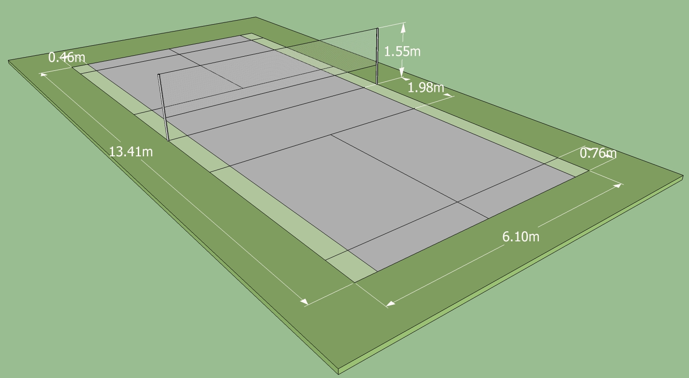

Правла (упрощенные)
Цель игры - набрать больше очков, чем противник, ударив воланчик через сетку на сторону соперника так, чтобы он упал на пол соперника и не был сыгран его соперником.
Игра начинается с подачи справа к сопернику и чередуется между игроками после каждого розыгрыша.
Игроки обязаны отправить воланчик через сетку так, чтобы он попал на пол соперника.
Игроки могут делать только одно касание волана перед его возвращением через сетку.
Матч состоит из трех партий до 21 очка. Победителем становится игрок или пара, которая наберет 21 очко и лидирует в счете минимум на 2 очка.
В случае если счет равен 20:20, игра продолжается до тех пор, пока один из игроков не вырвется вперед, набрав два очка больше.
Время для одного из розыгрышей не должно превышать 15 секунд, иначе игрок теряет очко.
Игра завершается, когда один из игроков или пара набирает две победные партии.

Рзмеры площадки
Площадка для игры в бадминтон имеет размер 13,4 метра в длину и 5,18 метра в ширину для игры одиночек и 6,1 метра в ширину для игры пар.
Сетка находится посередине поля и имеет высоту 1,55 метра.
Игровое поле разделено на две части - переднюю и заднюю, отделенные линией первого перелета.
